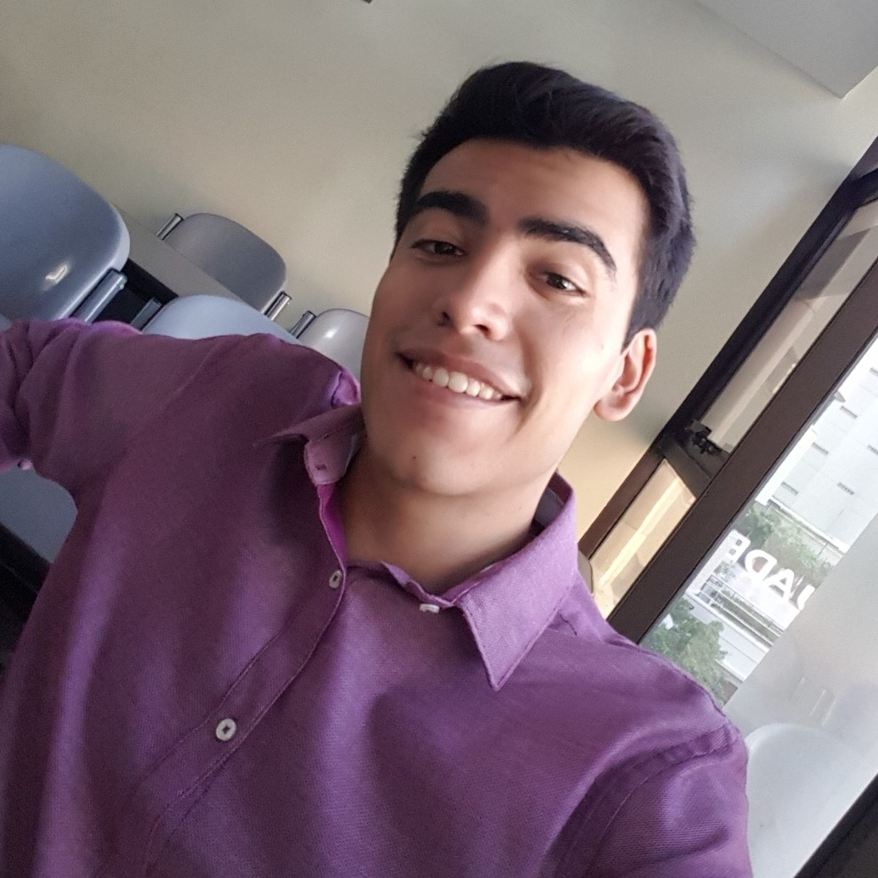

Sobre mi
Tengo 23 años y soy Ingeniero Industrial recibido en UADE en el año 2021. Actualmente me encuentro trabajando en PwC en el puesto de Associate 2, en Advisory. Cuento con 4 años de experiencia en atención al cliente en un kiosco, y 3 meses de experiencia brindando soporte en Cognizant. Complete mis estudios de inglés en el instituto Craft de Florencio Varela. Aprobé el FIRST Certificate en el año 2015. Me considero una persona responsable, que se adapta fácilmente a los cambios.